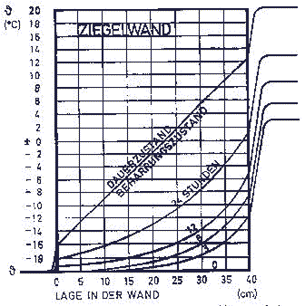
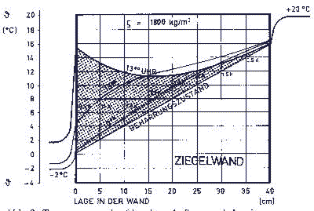

Weitere Datenübertragung Ihres Webseitenbesuchs an Google durch ein Opt-Out-Cookie stoppen - Klick!
Stop transferring your visit data to Google by a Opt-Out-Cookie - click!: Stop Google Analytics
Cookie Info. Datenschutzerklärung

 Altbau und Denkmalpflege Informationen - Startseite / Impressum
Altbau und Denkmalpflege Informationen - Startseite / Impressum
Kontra Energieeinsparungsverordnung ENEV - Pressemitteilungen, Petitionen, Stellungnahmen und Auswege aus dem Energiesparbeschiß
Die härtesten Bücher gegen den Klimabetrug - Kurz + deftig rezensiert +++
Bau- und Fachwerkbücher - Knapp + (teils) kritisch rezensiert
EnEV-Befreiung gem. § 25 (17 alt)! +++
Fragen? +++
Alles auf CD +++
27.10.06: DER SPIEGEL: Energiepass: Zu Tode gedämmte Häuser
Kostengünstiges Instandsetzen von Burgen, Schlössern, Herrenhäusern, Villen - Ratgeber zu Kauf, Finanzierung, Planung (PDF eBook)
Altbauten kostengünstig sanieren -
Heiße Tipps gegen Sanierpfusch im bestimmt frechsten Baubuch aller Zeiten (PDF eBook + Druckversion)
Energiesparseite mit Links zu Einsprüchen gegen EnEV+DIN 4108 +++
Wärmedämmung: Pfusch ohne Energieeinsparung?
Aktionen gegen die EnEV +++
Energiesparen durch richtig Heizen: Die Hüllflächentemperierung +++
Schimmel und Feuchte - Was tun?
Prof. Meier: Der k-Wert/U-Wert-Fehler +++
Das Lichtenfelser Experiment beweist: Dämmstoff dämmt nicht wie gedacht
Prof. Meier: Weitere Beiträge/Aufsätze/Artikel zum Energiesparen, Wärmedämmen,Feuchteschutz und Heizen +++
Prof. Meiers Website
Das berühmt/berüchtigte Interview des VdW Bayern
mit Prof. Meier

Claus Meier
DBV Praxis Ratgeber zur Denkmalpflege
Altbau und Wärmeschutz - 13 Fragen und Antworten [2]
Text leicht aktualisiert 19.12.2005 durch Redaktion K. Fischer
Seite 1
2 3 4 5 6 7 8 9
3. Ist das Berechnungsverfahren gem. WSVO / EnEV für massive Altbauten zutreffend?
Die Berechnungen in der WSVO/EnEV für den k(aktuell: U)-Wert nach DIN 4108 sind stationäre Berechnungen
und gelten für den Beharrungszustand, der nur im Labor existiert. Sie treffen deshalb für Altbauten mit
massiver und speicherfähiger Bausubstanz nicht zu. Dort herrschen instationäre, also veränderliche
Verhältnisse. Dabei verbessert die absorbierte Solarstrahlung das thermische Verhalten der Außenwand. In [2]
wird gesagt: "Beim Anheizen oder Auskühlen von Räumen oder bei direkter Sonnenzustrahlung liegen
instationäre Verhältnisse vor, so daß diese durch die ... k(U)-Werte nicht erfaßt werden".
Wie sehen nun die Temperaturkurven bei instationärer Betrachtung aus ?

Abb.1: Beim Anheizen eines Raumes stellt sich der Beharrungszustand (stationärer Zustand) erst
langsam ein - nach weit über 24 Stunden [1]. Das heißt: Bei gut speicherfähigem Material des Bauwerks
gibt es im 24-Stunden-Rhythmus einer Tag / Nacht-Periode keinen Beharrungszustand. Schon allein deswegen ist die
k(U)-Wert-Berechnung nach DIN 4108 praktisch sinnlos.
Durch die absorbierte Solarstrahlung ergeben sich gegenüber dem
Beharrungszustand instationäre (veränderliche) Verhältnisse; dies zeigt die Abb. 2.

Abb.2: In einem Manuskript, das
allerdings die Energiegewinne durch Speicherung negiert [3], wird eine 13 Uhr - Temperaturkurve bei winterlichen
Außentemperaturen von -2 bis +2 Grad Celsius gezeigt. Damit wird gegenüber dem Beharrungszustand ein
eingespeichertes "Energiepolster" von rund 980 Wh/m² erzielt, das zusätzlich von außen kostenlos zur
Verfügung steht. Der "stationäre Wärmestrom" führt in 24 Stunden bei dem hier vorhandenen k(U)-Wert
von 1,51 W/m²K und einer Temperaturdifferenz von 22 K zu einem Wärmeverlust von knapp 800 Wh/m².
Das ergibt also einen Energiegewinn von ca.180 Wh/m² aus der Sonnenenergie - im Winter!
Was hier exemplarisch gezeigt wird, gilt immer. Bei massiven, speicherfähigen Baustoffen liegt kein
Beharrungszustand vor. Bei Altbauten ist die gängige k(U)-Wert-Berechnung nach DIN 4108 nicht anwendbar.
Hier weiter: Seite 3
Kontroverse Fachliteratur und nützliche Produkte rund ums Energiesparen, den Schimmelpilz und die
Feuchteproblematik
Altbau und Denkmalpflege Informationen Startseite
Energiesparseite
Noch Fragen?
© Konrad Fischer